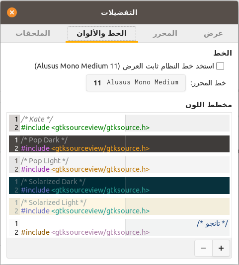
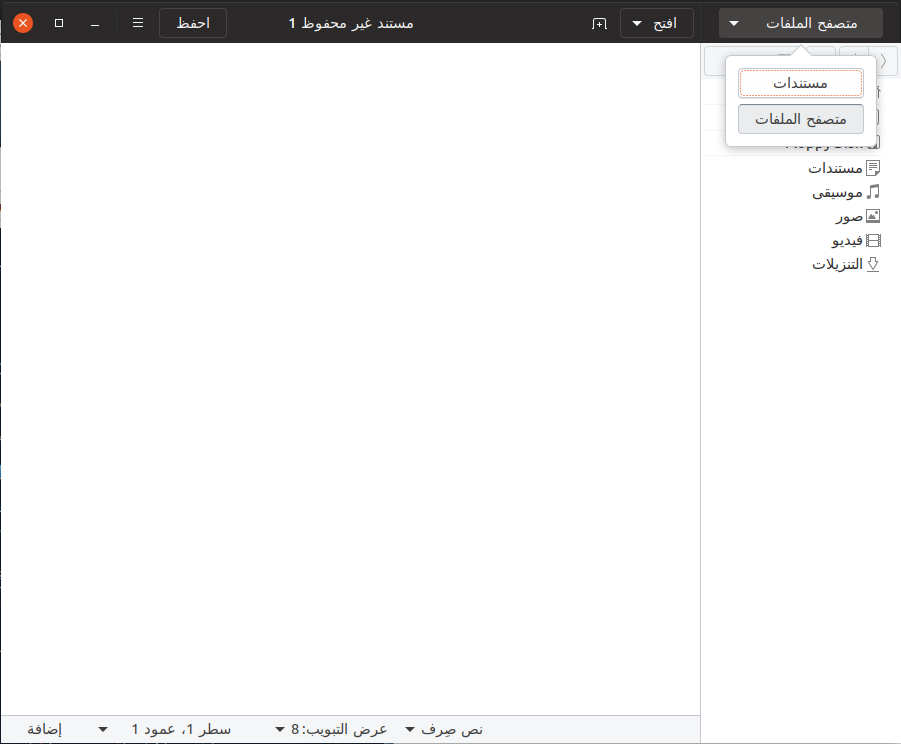
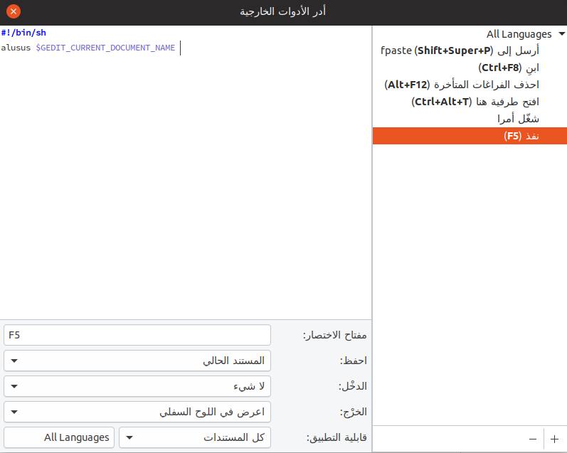
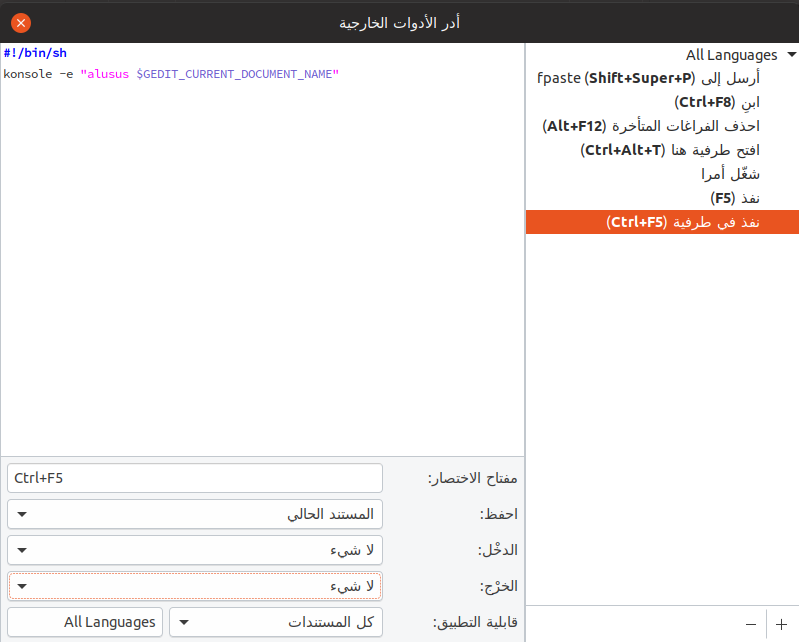
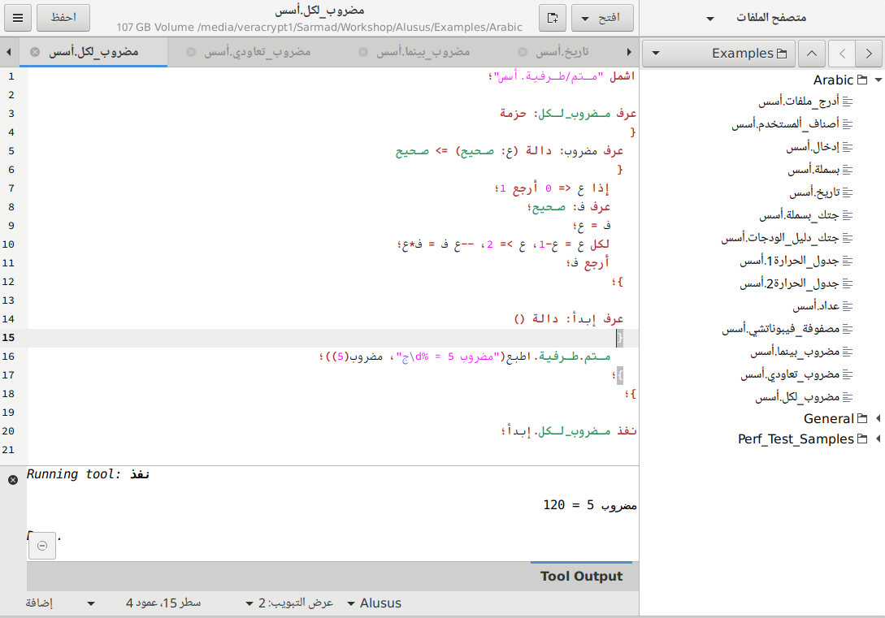

النسخة الحالية من لغة الأسس تدعم نظام لينكس فقط. تتوفر حزم جاهزة للتنصيب على لينكس بصيغتي deb و rpm. فإذا كانت توزيعة التوزيعة التي تستخدمها تدعم إحدى هاتين الصيغتين فما عليك سوى تنزيلها وتنصيبها باستخدام الأمر التالي فيما لو كنت تستخدم صيغة deb أو الذي يليه فما لو كنت تستخدم rpm:
$ sudo apt-get install alusus_0.4.0_amd64.deb
$ sudo dnf install alusus-0.4.0-1.x86_64.rpmوقد توفر توزيعتك واجهة رسومية لتنصيب الحزم بدل استخدام سطر الأوامر.
أما إذا لم تكن توزيعتك تدعم إحدى هاتين الصيغتين فستحتاج إلى بناء الأسس من الشفرة المصدرية.
لتشغيل أي برنامج بلغة الأسُس لا تحتاج سوى تنفيذ الأمر alusus متبوعاً باسم الملف المراد تشغيله، كما في المثال التالي:
$ alusus hello_world.alususويمكن أيضًا استخدام الوصلة العربية كما في المثال التالي:
$ الأسس بسملة.أسس
إذا كنت تنوي كتابة برامج بالعربية لسطر الأوامر فستحتاج إلى طرفية تدعم العربية. طرفية كونسول (konsole) من كدي تدعم العربية وبإمكانك تنصيبها حتى لو كنت تستخدم واجهة أخرى مثل واجهة جنوم. كذلك بإمكانك استخدام bicon لتوفير الدعم للعربية في طرفية جنوم.
لا تزال لغة الأسس في بدايتها وهي حاليًا تفتقر لبيئة تطوير متكاملة، لكن البديل الحالي محرر جنوم الذي يأتي مع دعم ممتاز للغة العربية بالإضافة إلى توفر بعض الإمكانيات والإضافات التي تسهل عمل المبرمج. عند تنصيب حزمة الأسُس فإنها تنصب معها ملفا تعريفيا للغة الأسُس ضمن اللغات التي يميزها محرر جنوم. بعد تنصيب الأسس ستجد أن محرر جنوم سيتعرف تلقائياً على الشفرات المصدرية المكتوبة بلغة الأسس (أي التي تنتهي بالإضافة .alusus أو .أسس) وسيقوم بتلوينها بالطريقة الملائمة. وهناك بعض التضبيطات الأخرى التي ننصح المستخدم بالقيام بها بعد تنصيب الأسس لجعل محرر جنوم أكثر ملائمة للبرمجة بلغة الأسس:

$ sudo apt install gedit-plugins



